library(tidyverse)
library(gt)
library(RColorBrewer)Chapter 11
Exploratory data analysis
11.3.3 Exercises
Question 1
Explore the distribution of each of the x, y, and z variables in diamonds. What do you learn? Think about a diamond and how you might decide which dimension is the length, width, and depth.
Upon exploratory data analysis (code shown below), I learn the following insights: —
There are outliers in distribution of
x, there are eight diamonds with zero value ofx, but no outliers on higher side.There are outliers in distribution of
y, there are eight diamonds with zero value ofy, and 2 outliers on higher side.There are outliers in distribution of
z, there are 20 diamonds with zero value ofz, and 1 outlier on higher side.The correlation between the variables show that
x,y, andzare strongly positively correlated amongst themselves and with the weight (carat).The mean values of
x,yandzare 5.73, 5.73 and 3.54. Thus, it is possible thatxandyrepresent either of length and width, whilezrepresents depth.Now, upon visualizing the density plots of
x,yandz, we see thatxandyare similar distributed so, they must be length and breadth, butzis smaller in value. So,zmust be depth.
Code
data("diamonds")
diamonds |>
ggplot(aes(x = x,
fill = (x == 0 | x > 12))) +
geom_histogram(binwidth = 0.1) +
coord_cartesian(ylim = c(0,10))
diamonds |>
ggplot(aes(x = y,
fill = (y == 0 | y > 12))) +
geom_histogram(binwidth = 0.1) +
coord_cartesian(ylim = c(0,10))
diamonds |>
ggplot(aes(x = z,
fill = (z == 0 | z > 12))) +
geom_histogram(binwidth = 0.1) +
coord_cartesian(ylim = c(0,20))
diamonds |>
summarize(x = mean(x),
y = mean(y),
z = mean(z))
diamonds |>
filter(x == 0 | z == 0 | y == 0)
diamonds |>
select(x, y, z) |>
pivot_longer(cols = everything(),
names_to = "dimension",
values_to = "value") |>
ggplot() +
geom_density(aes(x = value,
col = dimension)) +
theme_classic() +
theme(legend.position = "bottom") +
coord_cartesian(xlim = c(0, 10))Question 2
Explore the distribution of price. Do you discover anything unusual or surprising? (Hint: Carefully think about the binwidth and make sure you try a wide range of values.)
The distribution of price shows a surprising fact in Figure 1 that there are no diamonds priced between $1,450 and $1,550.
diamonds |>
ggplot(aes(price)) +
geom_histogram(binwidth = 10,
fill = "lightgrey",
color = "darkgrey") +
coord_cartesian(xlim = c(500, 2000)) +
scale_x_continuous(breaks = seq(from = 500, to = 2000, by = 100)) +
theme_minimal()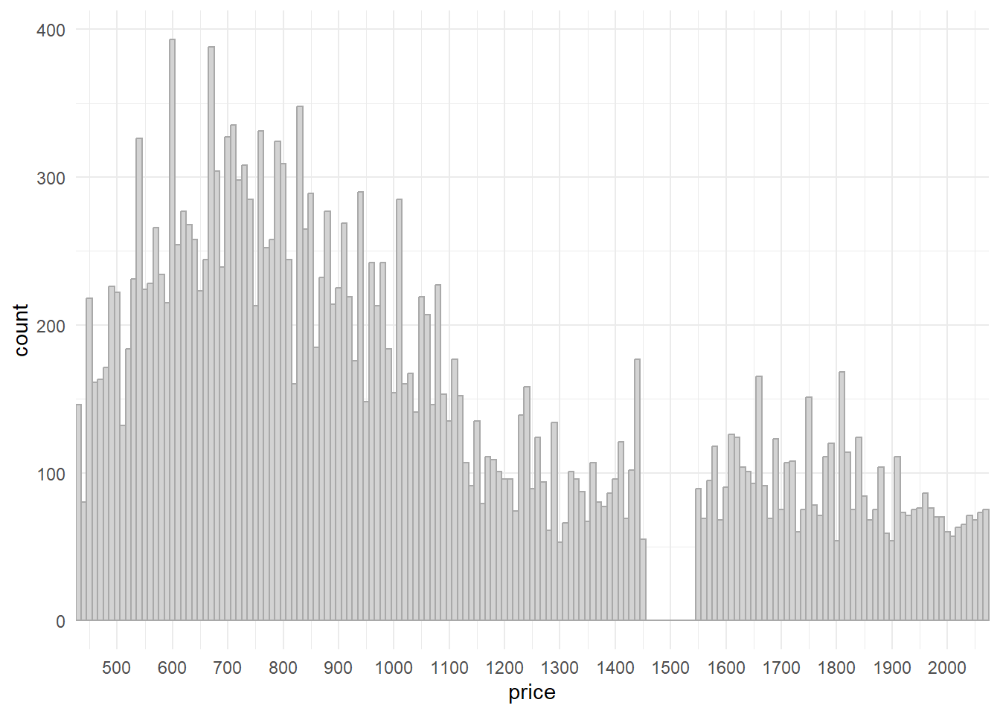
Question 3
How many diamonds are 0.99 carat? How many are 1 carat? What do you think is the cause of the difference?
There are only 23 diamonds of 0.99 carat, but 1,558 diamonds of 1 carat.
The possible cause of this difference is that the weight recorder or measurement instrument rounded off to the nearest integer, especially if carat was 0.99.
diamonds |>
select(carat) |>
filter(carat == 0.99 | carat == 1) |>
group_by(carat) |>
count()# A tibble: 2 × 2
# Groups: carat [2]
carat n
<dbl> <int>
1 0.99 23
2 1 1558Question 4
Compare and contrast coord_cartesian() vs. xlim() or ylim() when zooming in on a histogram. What happens if you leave binwidth unset? What happens if you try and zoom so only half a bar shows?
Both coord_cartesian() and xlim() / ylim() serve a similar purpose of adjusting the visible range of data in a plot, but they do so in slightly different ways. The Figure 2 shows the difference.
xlim() and ylim() are functions in R that directly modify the data range that is displayed on the x-axis and y-axis, respectively. The xlim() / ylim() replace all values outside the range into NAs . They remove the data outside the limits. They can be used to zoom in on specific portions of the plot.
Pros:
- Can help emphasize specific details or patterns in the data after removal of outliers.
Cons:
Data points outside the specified range are removed from the plot, potentially leading to a loss of context.
If used improperly, it can distort the visual representation of the data, making it appear more or less significant than it actually is.
coord_cartesian() allows us to adjust the visible range of data without altering the underlying data.
Pros:
It does not remove any data points from the plot; it only changes the visible range.
Useful when you want to focus on a specific part of the plot while still having access to the full data context.
Cons:
- If there are outliers or extreme values, they might still affect the appearance of the plot.
Comparison
| Aspect | coord_cartesian() |
xlim()/ylim() |
|---|---|---|
| Purpose | Adjust visible range without altering data | Set specific data range to be displayed, removes data outside the range |
| Data Integrity | Maintains original data and scaling | Can exclude data points outside range |
| Context | Preserves overall data context | May lose context due to excluded data; or reveal new insights upon removal of outliers. |
| Impact on Plot | Adjusts only the visible area | Alters axes scaling and data representation |
| Handling outliers | Keeps outliers within context | Remove outliers outside the specified range |
| Control over Range | Limited control over axes scaling | Precise control over displayed range |
| Suitability for Histograms | Recommended for maintaining bin sizes | Can distort histogram representation |
gridExtra::grid.arrange(
diamonds |>
ggplot(aes(x = y)) +
geom_histogram(binwidth = 0.1) +
ylim(0, 1000) +
xlim(0, 10) +
labs(subtitle = "xlim and ylim remove data outside the limits, \neg. counts > 1000; or the observation at zero"),
diamonds |>
ggplot(aes(x = y)) +
geom_histogram(binwidth = 0.1) +
coord_cartesian(ylim = c(0, 1000),
xlim = c(0, 10)) +
labs(subtitle = "coord_cartesian preserves data outside the limits, \neg. counts > 1000; or the observation at zero"),
ncol = 2)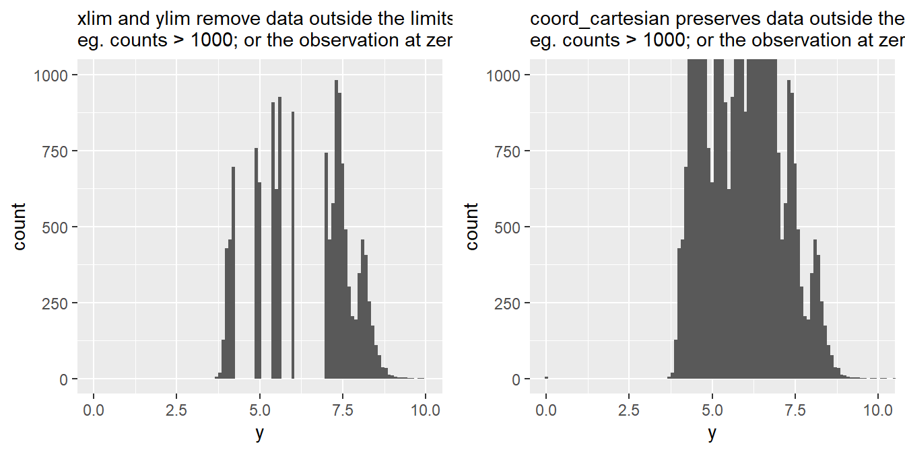
11.4.1 Exercises
Question 1
What happens to missing values in a histogram? What happens to missing values in a bar chart? Why is there a difference in how missing values are handled in histograms and bar charts?
In a histogram, missing values are typically ignored. If there are missing values in your data, they won’t be placed into any bin and won’t contribute to the creation of bars in the histogram. Thus, histogram only shows the distribution of the non-missing values.
In a bar chart, which is used to display categorical data, missing values are treated as a distinct category. When you create a bar chart using ggplot2, each unique category in your data is represented by a bar. If there are missing values, ggplot2 will include a separate bar to represent the missing category, often labeled as “NA” or “Missing”.
The difference in how missing values are handled in histograms and bar charts arises from their underlying purposes:
Histograms are primarily used to visualize the distribution of continuous or numeric data. Since missing values don’t have a specific numeric value to be placed into bins, it’s common practice to exclude them.
Bar charts, on the other hand, are used to compare the frequency or count of different categories. Missing values are treated as a category themselves.
In summary, the distinction in handling missing values is based on the type of data being visualized and the purpose of each plot. Histograms focus on the distribution of non-missing numeric data, while bar charts emphasize the comparison of categorical data, including missing values as a separate category.
# Set a random seed for reproducibility
set.seed(123)
# Create a sample dataset with missing values
n = 200
df = data.frame(
Category = sample(x = c("A", "B", "C", "D"),
size = n,
replace = TRUE),
Value = rnorm(n)
)
# Introduce missing values
df$Value[sample(1:n, 40)] = NA
df$Category[sample(1:n, 40)] = NA
# Create plots to demonstrate
gridExtra::grid.arrange(
ggplot(df, aes(x = Value)) +
geom_histogram(col = "grey", fill = "lightgrey") +
theme_minimal() +
labs(subtitle = "Histogram drops the missing values"),
ggplot(df, aes(x = Category)) +
geom_bar(col = "grey", fill = "lightgrey") +
theme_minimal() +
labs(subtitle = "Bar Chart includes missing values as a category"),
ncol = 2)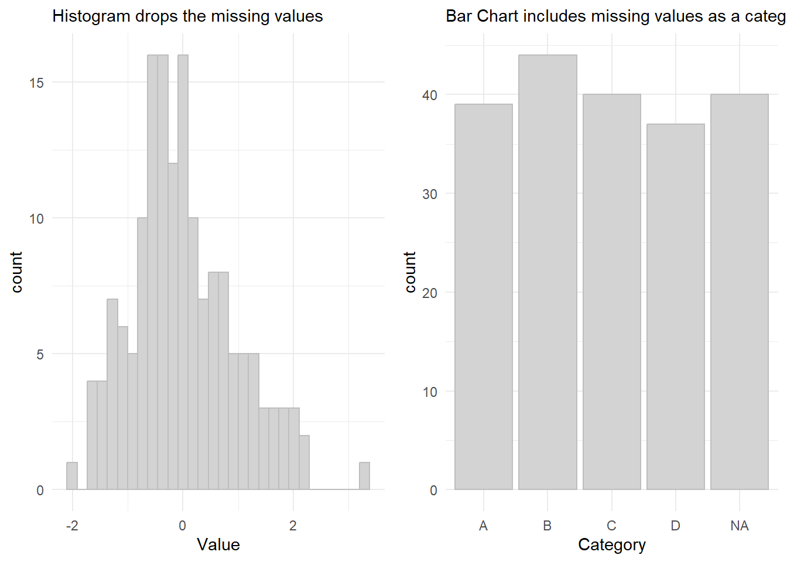
Question 2
What does na.rm = TRUE do in mean() and sum()?
When na.rm is set to TRUE, the function will remove any NA values from the input vector before performing the calculation. This means that the resulting mean or sum will only consider the non-missing values.
This is important because in R , NAs cannot be added or subtrated or operated upon, for example, NA + 1 = NA. Thus, even if one observation is NA, the mean or sum of the entire vector will be NA . Hence, using na.rm = TRUE is important.
mean(df$Value)[1] NAmean(df$Value, na.rm = TRUE)[1] 0.006409991sum(df$Value)[1] NAsum(df$Value, na.rm = TRUE)[1] 1.025599Question 3
Recreate the frequency plot of scheduled_dep_time colored by whether the flight was cancelled or not. Also facet by the cancelled variable. Experiment with different values of the scales variable in the faceting function to mitigate the effect of more non-cancelled flights than cancelled flights.
The best value of scales to use is scales = "free_y" so that the two facets’ y-axis are completely free and we can compare the distribution of cancelled flights vs. non-cancelled flights in Figure 3.
nycflights13::flights |>
mutate(
cancelled = is.na(dep_time),
sched_hour = sched_dep_time %/% 100,
sched_min = sched_dep_time %% 100,
sched_dep_time = sched_hour + (sched_min / 60)
) |>
# Create nice names for "cancelled" to show in the eventual plot
mutate(cancelled = as_factor(ifelse(cancelled,
"Cancelled Flights",
"Flights Not Cancelled"))) |>
ggplot(aes(x = sched_dep_time)) +
geom_freqpoly(lwd = 1) +
theme_minimal() +
facet_wrap(~cancelled,
scales = "free_y") +
labs(x = "Scheduled Departure Time (in hrs)",
y = "Number of flights") +
scale_x_continuous(breaks = seq(0, 24, 4))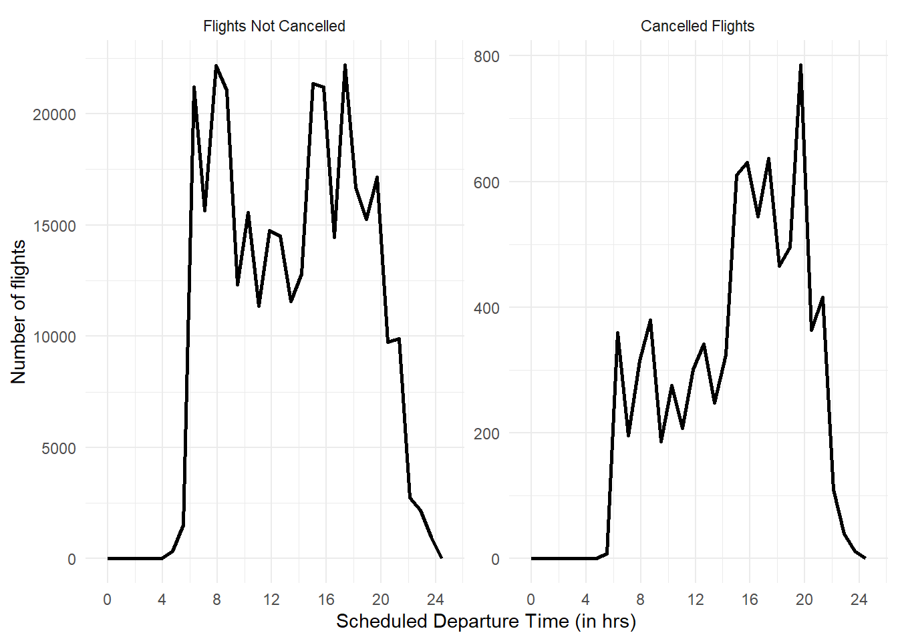
11.5.1.1 Exercises
Question 1
Use what you’ve learned to improve the visualization of the departure times of cancelled vs. non-cancelled flights.
The Figure 4 shows an example to demonstrate exploratory data analysis in missing values in data-set flights of the package nycflights13 . It shows that as the day progresses, more flights get cancelled. Evening flights are more likely to get cancelled than morning flights.
nycflights13::flights |>
mutate(
cancelled = is.na(dep_time),
sched_hour = sched_dep_time %/% 100,
sched_min = sched_dep_time %% 100,
sched_dep_time = sched_hour + (sched_min / 60)
) |>
ggplot(aes(x = sched_dep_time,
y = after_stat(density))) +
geom_freqpoly(aes(col = cancelled),
lwd = 1) +
theme_minimal() +
theme(legend.position = "bottom") +
labs(x = "Scheduled Departure Time (in hrs)",
y = "Proportion of flights departed",
color = "Whether the flight was cancelled?",
subtitle = "Comparison of density frequency polygons of cancelled vs. non-cancelled flights") +
scale_x_continuous(breaks = seq(0,24, by = 2))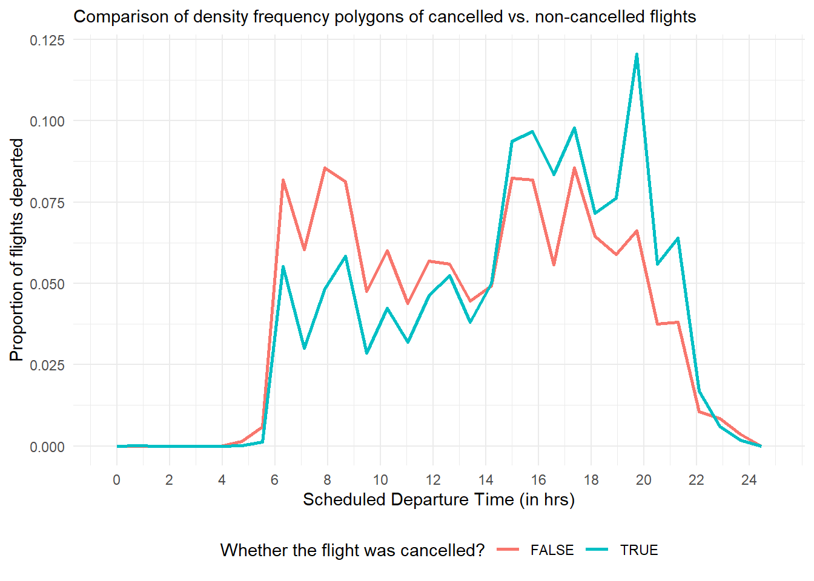
Another method to visualize it is shown using stat = "density" argument in the geom_freqpoly() in Figure 5 below.
Code
nycflights13::flights |>
mutate(
cancelled = is.na(dep_time),
sched_hour = sched_dep_time %/% 100,
sched_min = sched_dep_time %% 100,
sched_dep_time = sched_hour + (sched_min / 60)
) |>
ggplot(aes(x = sched_dep_time)) +
geom_freqpoly(aes(col = cancelled),
stat = "density",
lwd = 1) +
theme_minimal() +
theme(legend.position = "bottom") +
labs(x = "Scheduled Departure Time (in hrs)",
y = "Proportion of flights departed",
color = "Whether the flight was cancelled?",
subtitle = "Comparison of density frequency polygons of cancelled vs. non-cancelled flights") +
scale_x_continuous(breaks = seq(0,24, by = 2))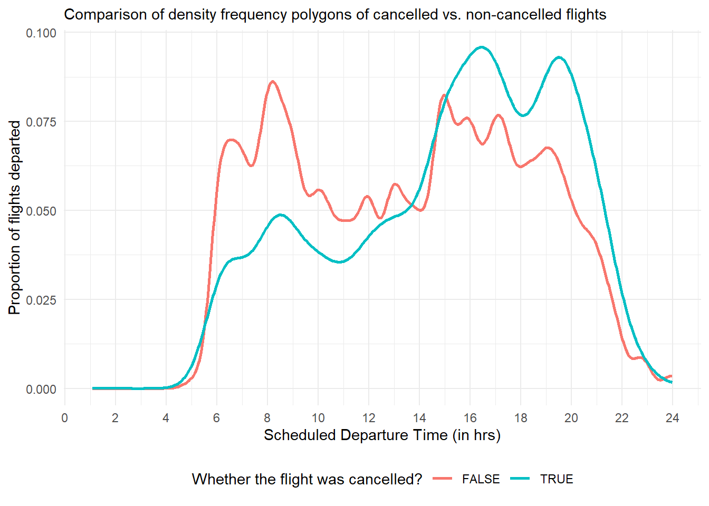
Lastly, we can also work on the data set, compute the percentage of flights that are cancelled within each hour and plot the percentage as shown in Figure 6 .
Code
nycflights13::flights |>
mutate(
cancelled = is.na(dep_time),
sched_hour = sched_dep_time %/% 100
) |>
group_by(sched_hour) |>
summarise(
cancelled = sum(cancelled),
total = n()
) |>
mutate (prop_cancelled = cancelled/total) |>
ggplot(aes(x = sched_hour,
y = prop_cancelled*100)) +
geom_line() +
geom_point() +
xlim(4,24) +
ylim(0, 5) +
scale_x_continuous(breaks = seq(4, 24, 2)) +
coord_cartesian(xlim = c(4, 24)) +
labs(x = "Scheduled Departure Time (in hrs)",
y = "Percentage of flights that were cancelled",
subtitle = "Percentage of cancelled flights over different scheduled departure times") +
theme_minimal()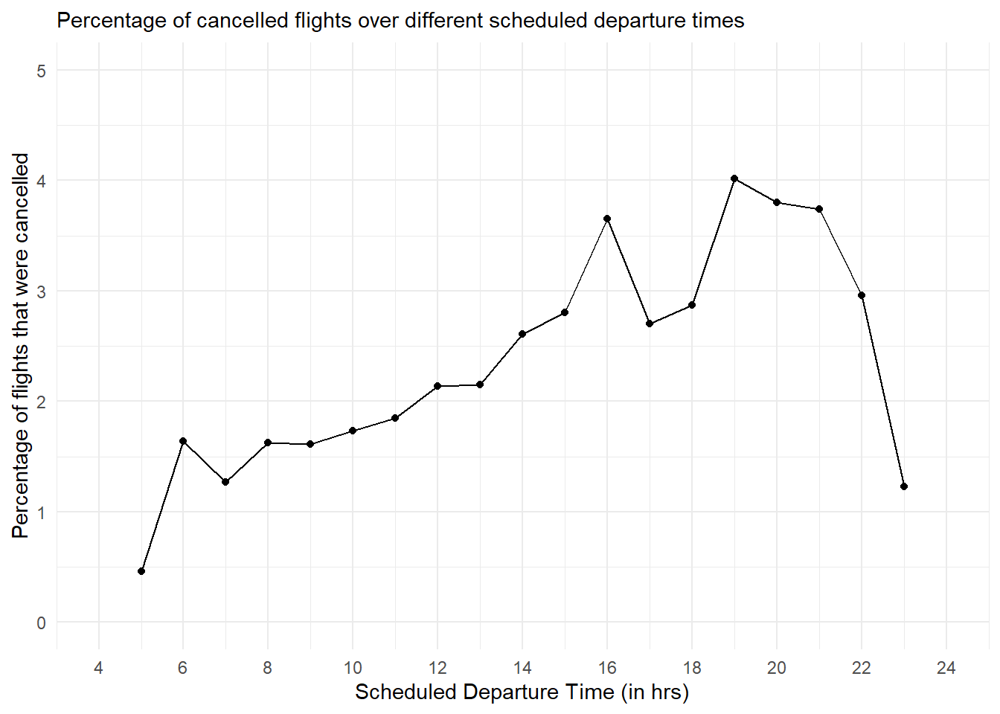
Question 2
Based on EDA, what variable in the diamonds data-set appears to be most important for predicting the price of a diamond? How is that variable correlated with cut? Why does the combination of those two relationships lead to lower quality diamonds being more expensive?
As we can see from the correlation plot in Figure 7, the variable most important for predicting the price of a diamond is carat , i.e. the weight of the diamond.
Code
diamonds |>
select(-c(cut, color, clarity)) |>
cor() |>
corrplot::corrplot(method = "number")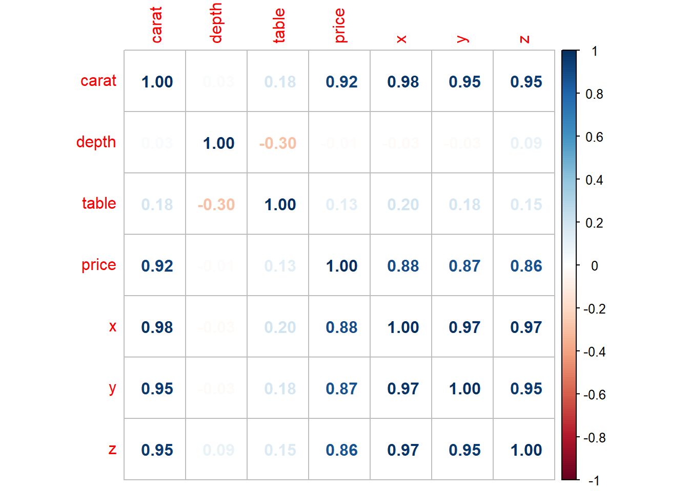
The variable cut is an ordinal variable, so we cant do numerical correlation test, rather we can observe the graphical relation as shown in Figure 8. There appears to be a slight negative correlation, as is indicated by decreasing medians. It is apparent that poorer quality diamonds, i.e. lower cut have larger weight, i.e. carat. Thus, the combination of these two relationships, i.e.,
Higher
caratdiamonds having higher price.Lower
cutdiamonds having highercarat.
lead to lower quality diamonds being more expensive (since they are heavier, i.e of higher carat).
Code
diamonds |>
ggplot(aes(x = cut,
y = carat)) +
geom_boxplot(notch = TRUE,
varwidth = TRUE,
fill = "lightgrey",
outlier.alpha = 0.1) +
theme_minimal() +
coord_cartesian(ylim = c(0,2)) +
labs(x = "Cut of the diamond",
y = "Carat of the diamond",
caption = "Note 1: Width of boxplot is proportional to square root of the number of observations.\nNote 2: The notches don't overlap indicating that medians are significantly different",
title = "Relation between cut and carat")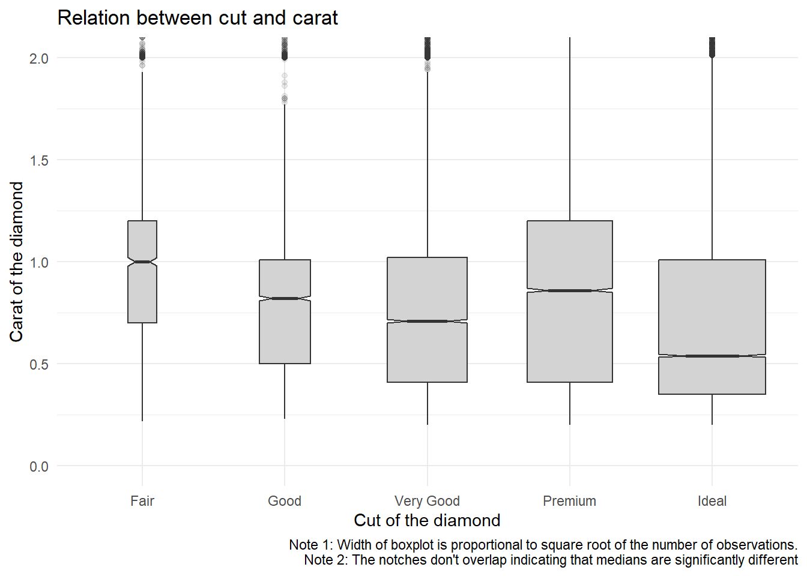
Question 3
Instead of exchanging the x and y variables, add coord_flip() as a new layer to the vertical box-plot to create a horizontal one. How does this compare to exchanging the variables?
When we add coord_flip() to the previous answer’s code we get a horizontal box-plot shown below in Figure 9.
Using coord_flip() is easier than the approach of changing variables, as we don’t need to manually change the variables’ assignment in the entire code.
Code
diamonds |>
ggplot(aes(x = cut,
y = carat)) +
geom_boxplot(notch = TRUE,
varwidth = TRUE,
fill = "lightgrey",
outlier.alpha = 0.1) +
theme_minimal() +
labs(x = "Cut of the diamond",
y = "Carat of the diamond",
caption = "Note 1: Width of boxplot is proportional to square root of the number of observations.\nNote 2: The notches don't overlap indicating that medians are significantly different",
title = "Relation between cut and carat") +
coord_flip(ylim = c(0,2))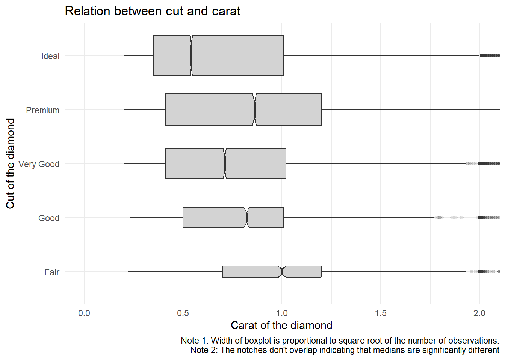
Question 4
One problem with boxplots is that they were developed in an era of much smaller data-sets and tend to display a prohibitively large number of “outlying values”. One approach to remedy this problem is the letter value plot. Install the lvplot package, and try using geom_lv() to display the distribution of price vs. cut. What do you learn? How do you interpret the plots?
The letter-value box plot is an extension of the traditional boxplot method. While conventional boxplots provide a basic overview of the central 50% of data and its spread, they might not offer accurate information about data points outside the quartiles, especially for larger data sets.
For larger data-sets (around 10,000 to 100,000 observations), more precise estimates of quantiles beyond the quartiles can be obtained, and a higher number of “outliers” are likely to be present (approximately 0.4 plus 0.007 times the sample size).
The letter-value box plot tackles these limitations by conveying more detailed information about the tails of the data using letter values. These letter values are utilized as reliable estimates of their corresponding quantiles only up to a certain depth into the tails. Additionally, “outliers” are defined based on the most extreme letter value depicted in the plot.
From my comprehension, the widest box encompasses letter values that correspond to (rough) quartiles. Subsequent wider boxes encompass letter values spanning from (rough) quartiles to (rough) octiles and further, extending in both directions. This pattern continues iteratively.1
However, in my view, a violin plot, like the one shown in Figure 11, is more intuitive and easier to understand.
Code
library(lvplot)
diamonds |>
ggplot(aes(x = cut,
y = price)) +
geom_lv(fill = "lightgrey") +
theme_minimal() +
labs(x = "Cut of the diamond",
y = "Price of the diamond",
title = "Relation between cut and price with an LV-Plot")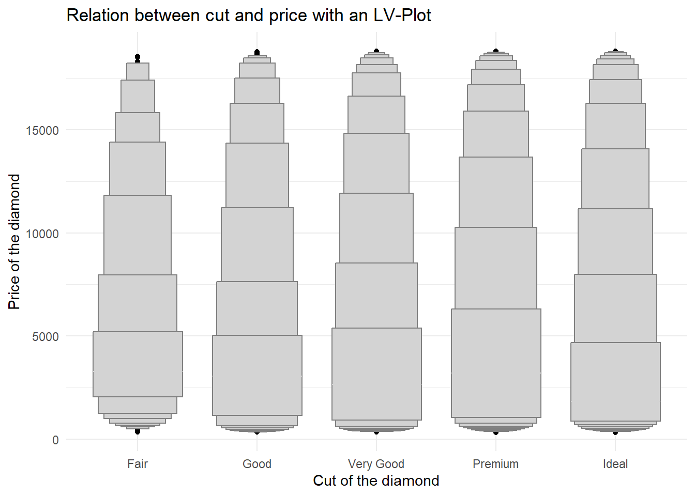
Code
diamonds |>
ggplot(aes(x = cut,
y = price)) +
geom_violin(fill = "lightgrey") +
theme_minimal() +
labs(x = "Cut of the diamond",
y = "Price of the diamond",
caption = "Note : Width of lvplot is proportional to square root of the number of observations",
title = "Relation between cut and price with a Violin Plot")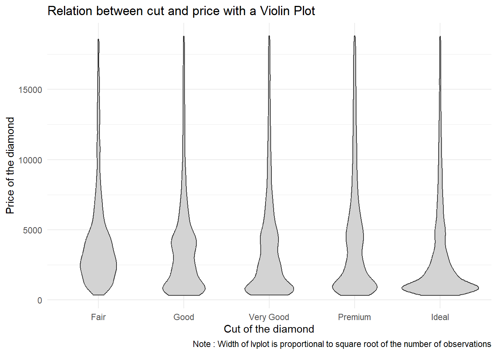
Question 5
Create a visualization of diamond prices vs. a categorical variable from the diamonds data-set using geom_violin(), then a faceted geom_histogram(), then a colored geom_freqpoly(), and then a colored geom_density(). Compare and contrast the four plots. What are the pros and cons of each method of visualizing the distribution of a numerical variable based on the levels of a categorical variable?
Let us choose to study the relation between cut (a categorical variable) and price. The four methods — geom_violin(), faceted geom_histogram(), colored geom_freqpoly(), and colored geom_density() — each have their own strengths and limitations.
geom_violin():Code
# Violin Plot diamonds |> ggplot(aes(x = cut, y = price)) + theme_classic() + labs(x = "Cut of the diamond", y = "Price of the diamond") + geom_violin() + labs(title = "Violin Plot")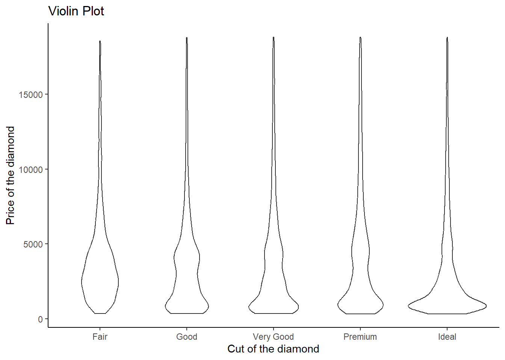
- Pros:
- Provides a combination of a box plot and a kernel density plot.
- Displays the distribution’s shape, range, and density all in one plot.
- Suitable for showing multi-modal distributions and comparing the distributions of multiple categorical levels.
- Cons:
- Can become cluttered when comparing too many categories.
- Might be less familiar to some audiences compared to more traditional plots like histograms.
- Pros:
Faceted
geom_histogram():Code
# Faceted histogram diamonds |> ggplot(aes(price)) + theme_classic() + geom_histogram() + facet_wrap(~cut, scales = "free") + labs(title = "Faceted histogram")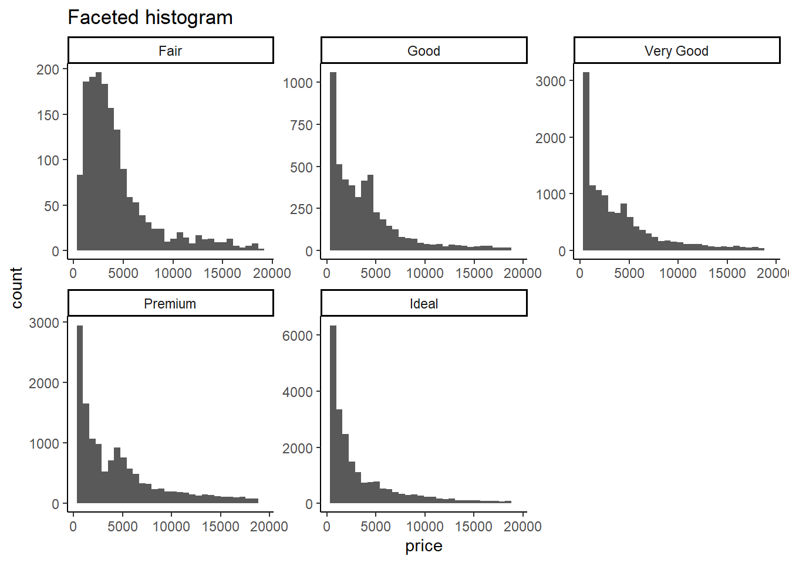
- Pros:
- Shows the distribution of each category using separate histograms.
- Easy to compare the distributions across categories.
- Good for identifying differences in central tendency and spread.
- Cons:
- Can be space-consuming when there are many categories.
- Difficult to compare shapes of distributions directly due to varying bin widths.
- Pros:
Colored
geom_freqpoly():Code
# Coloured frequency polygon diamonds |> ggplot(aes(price)) + theme_classic() + geom_freqpoly(aes(color = cut), lwd = 1) + scale_color_brewer(palette = "Dark2") + labs(title = "Coloured frequency polygon")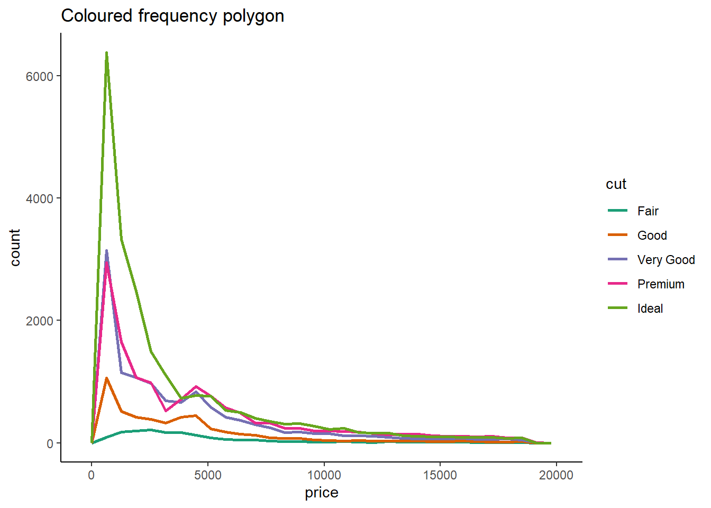
- Pros:
- Overlaid frequency polygons for each category allow for easy visual comparison.
- Cons:
- Over-plotting might occur if there are many categories.
- Might not clearly display the density of the distributions.
- Pros:
Colored
geom_density():Code
# Coloured density plot diamonds |> ggplot(aes(price)) + theme_classic() + geom_density(aes(color = cut), lwd = 1) + scale_color_brewer(palette = "Dark2") + labs(title = "Coloured density plot")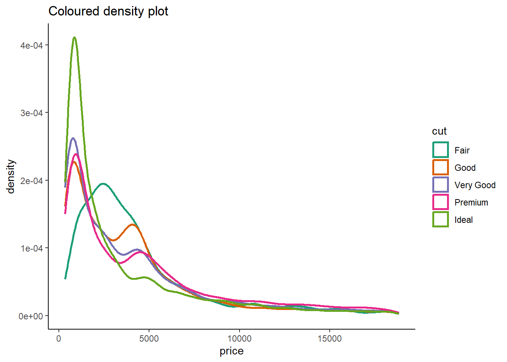
- Pros:
- Provides smoothed density plots for each category.
- Offers a continuous representation of the distribution, aiding in identifying patterns and modes.
- Cons:
- May require familiarity with density plots for proper interpretation.
- Not as effective for identifying specific data values (peaks, tails, etc.).
- Pros:
Overall, the choice of visualization method depends on
the goals of your analysis,
the number of categorical levels, and
the level of detail we want to convey.
If we’re aiming to show the overall distribution shape and density, geom_violin() and geom_density() are good options.
For comparing distributions more directly, especially when you have few categories, colored geom_freqpoly() might be useful.
Lastly, if you want to control bin-widths manually and compare median etc. more explicitly, faceted geom_histogram() can be effective.
Question 6
If you have a small data-set, it’s sometimes useful to use geom_jitter() to avoid over-plotting to more easily see the relationship between a continuous and categorical variable. The ggbeeswarm package provides a number of methods similar to geom_jitter(). List them and briefly describe what each one does.
Footnotes
This my my interpretation, and needs confirmation. Please comment or leave a pull request / issue on GitHub.↩︎